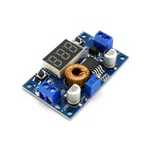

DC-DC понижающий преобразователь XL4015E1 4–38В→1.25–36В, 5А 75Вт
XL4015E1 — это понижающий DC-DC преобразователь (buck) от XLSEMI для преобразования более высокого постоянного напряжения в более низкое. Обычно используется в регулируемых модулях питания для лабораторных блоков, DIY-устройств и питания нагрузки от 12/24 В.

Документация
Характеристики
Подробнее
Микросхема XL4015E1 предназначена для построения понижающих источников питания с широким диапазоном входного напряжения и регулируемым выходом. По официальному описанию производителя, это 180 кГц PWM buck DC/DC converter с внутренним MOSFET, ограничением тока и защитой от перегрева и короткого замыкания. Для типовых модулей на XL4015E1 обычно заявляют выход до 5 А и мощность порядка 75 Вт, но реальная доступная мощность зависит от охлаждения, входного напряжения и качества платы. Чаще всего такие модули применяют для питания светодиодных лент, зарядных цепей, моторчиков и другой 12/24-вольтовой электроники.